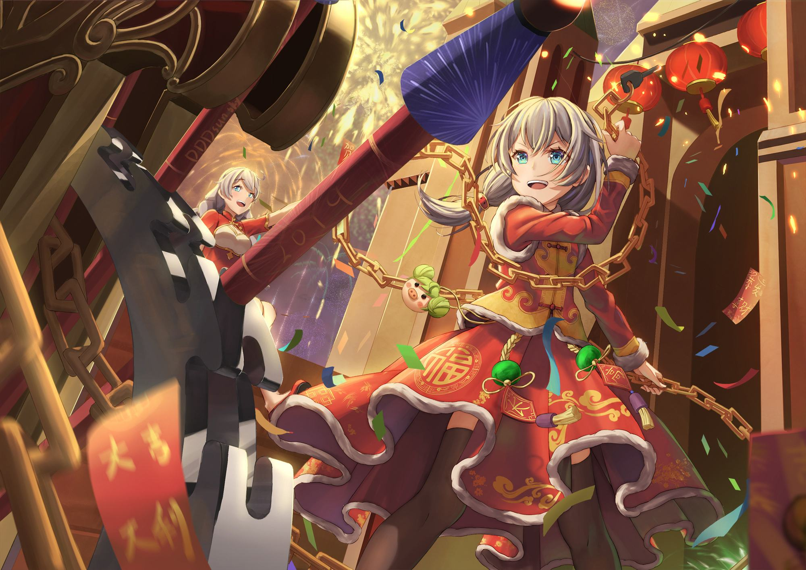

-
- 希望不熄，薪火永燃

女武神的面板分为HP、SP、攻击、防御、会心及负重6项数值，均能通过升级和晋升提升。舰长可以把负重理解为对角色强度的一个限制，每名女武神的负重初始数值都比较低，而性能越好的武器、圣痕所需的负重也越高。
圣痕系统分为上、中、下3种类型，分为攻击、防御、辅助3种属性，圣痕的类型不能交叉搭配。有的圣痕有单独的圣痕技能，有的没有。玩家佩戴指定的两件套或三件套的圣痕时，还能激活隐藏的套装效果。玩家要想获得各种圣痕，可通过补给抽卡、挑战各种副本关卡等途径，可获得各种圣痕。玩家获得各种圣痕后，可对圣痕进行强化、进化、培养等操作，来提升圣痕的属性效果的 .